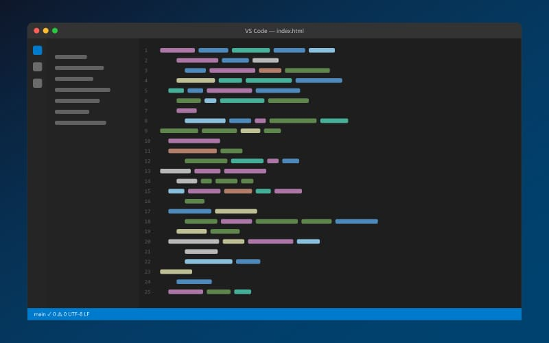
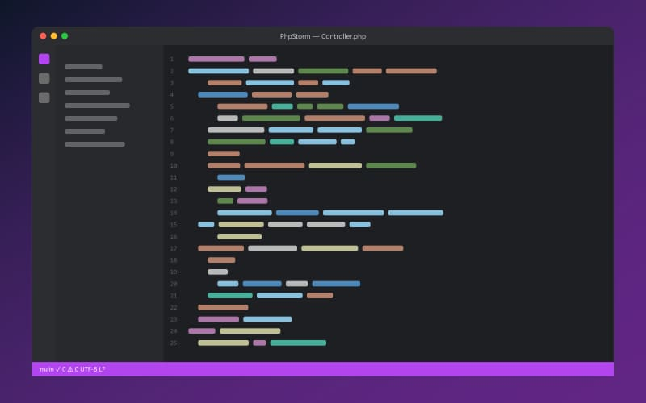

IDE для веб-разработки
Сравниваем три популярных инструмента веб-разработчика: Visual Studio Code, PhpStorm и WebStorm.
Что такое IDE
Интегрированная среда разработки (IDE) объединяет редактор кода, навигацию по проекту, отладчик, систему контроля версий и терминал в одном окне. Для веб-разработчика это значит меньше переключений между программами и больше времени на сам код.
Редакторы в обзоре
-

Visual Studio Code
Бесплатный редактор от Microsoft с тысячами расширений.
-

PhpStorm
IDE от JetBrains для PHP, Laravel, Symfony и WordPress.
-

WebStorm
IDE от JetBrains для JavaScript, TypeScript и Node.js.

Как выбрать
- Много PHP — PhpStorm.
- Фронтенд и Node.js — WebStorm.
- Нужен бесплатный универсальный редактор — VS Code.